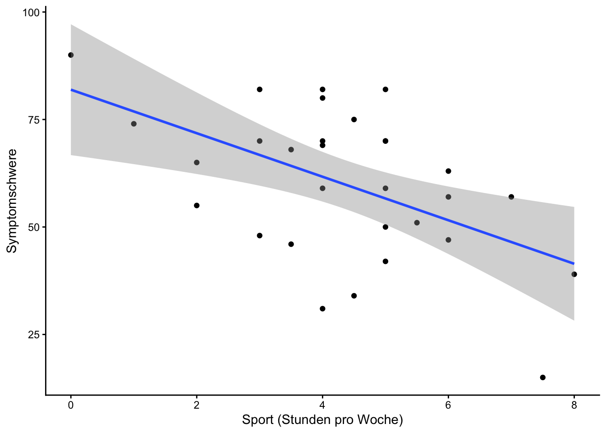
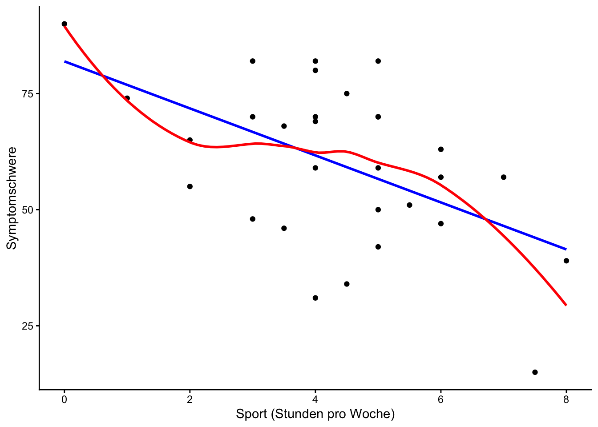
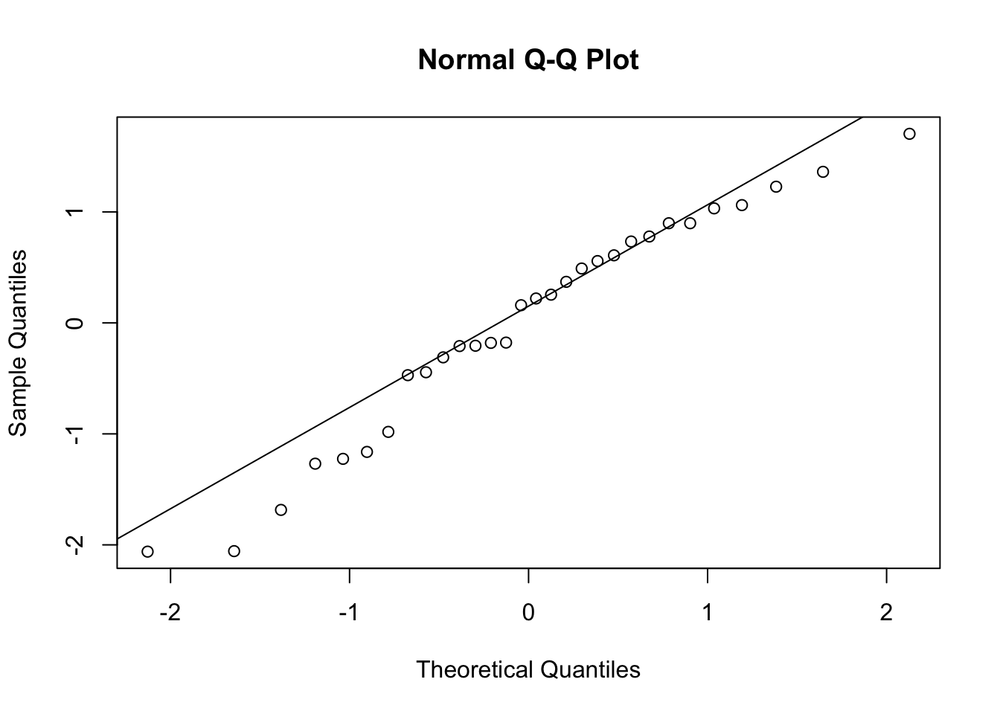
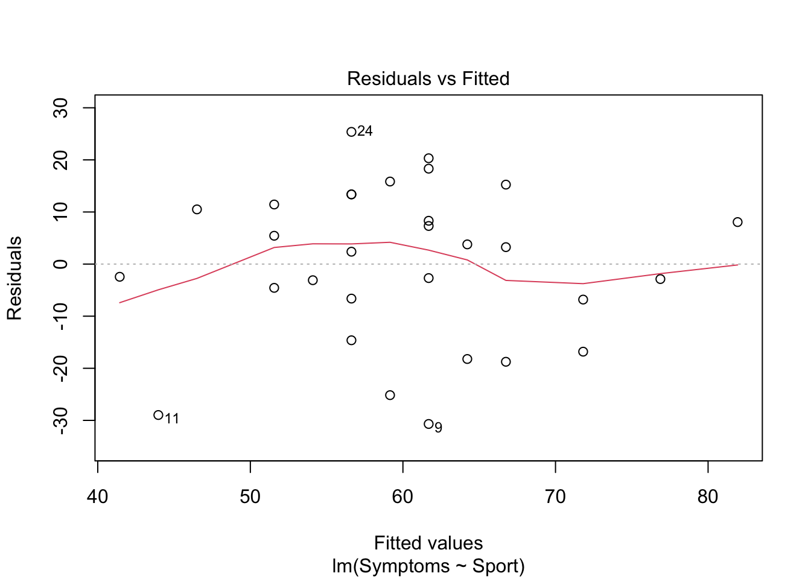
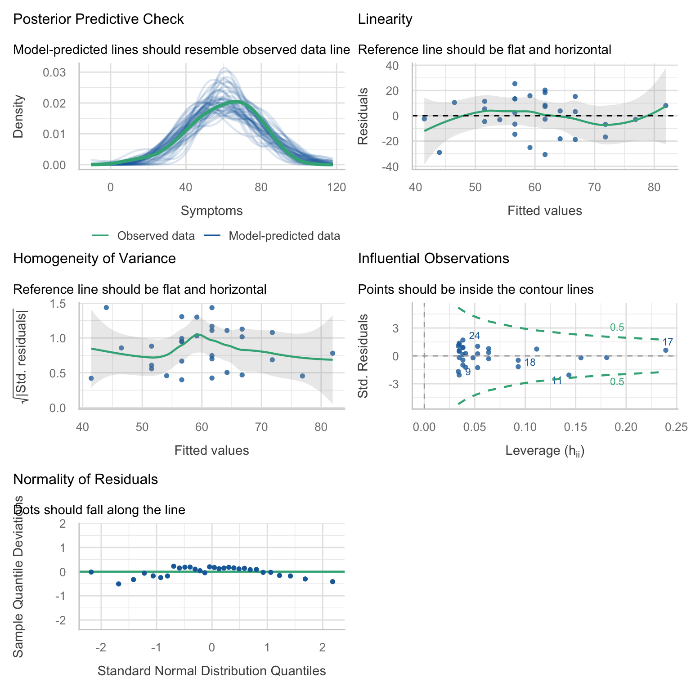

Kapitel 17 Einfache lineare Regression
Mit der Korrelation haben wir bereits ungerichtete Zusammenhänge zwischen zwei Variablen untersucht. Bei der Regression unterstellen wir nun eine Wirkrichtung: Eine unabhängige Variable (UV, Prädiktor) sagt eine abhängige Variable (AV, Kriterium) vorher.
Zur Erinnerung aus der Vorlesung Quantitative Methoden II: Die einfache lineare Regression beschreibt den Zusammenhang zwischen UV und AV durch eine Gerade:
\[\hat{y}_i=a+b \cdot x_i\]
- \(a\): Y-Achsenabschnitt \(\rightarrow\) erwarteter Wert der AV, wenn die UV \(=0\) ist
- \(b\): Steigung \(\rightarrow\) Veränderung der AV, wenn die UV um 1 Einheit zunimmt
Die Koeffizienten werden so geschätzt, dass die Abweichungen der beobachteten von den vorhergesagten Werten (die Residuen) möglichst klein sind (Methode der kleinsten Quadrate). Diese Rechnung übernimmt R für uns.
17.1 Hypothesen
Für unser Beispiel nutzen wir wieder den Datensatz aus dem Kapitel zur ANOVA:
therapy4groups = read.csv("https://raw.githubusercontent.com/stephangoerigk/WAF_Folien/master/therapy4groups.csv")
head(therapy4groups)## ID Therapy Symptoms Diagnosis Behandlungsversuche
## 1 1 SSRI 46 Depression 3
## 2 2 SSRI 69 Angst 3
## 3 3 SSRI 39 Depression 2
## 4 4 SSRI 80 Angst 4
## 5 5 SSRI 50 Depression 2
## 6 6 SSRI 63 Angst 5Der Datensatz enthält für jede Patient:in die erhaltene Therapie, die Diagnose und die Symptomschwere (Symptoms) nach der Behandlung.
Zusätzlich wurde bei allen Patient:innen erhoben, wie viele Stunden pro Woche sie Sport treiben. Körperliche Aktivität gilt als ein möglicher Einflussfaktor auf die Symptomschwere bei Depressionen und Angststörungen. Diese Variable ist im heruntergeladenen Datensatz noch nicht enthalten. Wir fügen sie daher als Vektor hinzu (siehe Kapitel Daten bearbeiten). Die Werte sind in derselben Reihenfolge wie die Zeilen des Datensatzes angegeben, d.h. der 1. Wert gehört zur Patient:in in der 1. Zeile usw.:
therapy4groups$Sport = c(3.5, 4.0, 8.0, 4.0, 5.0, 6.0, 5.5, 7.0, 4.0, 3.5,
7.5, 4.5, 5.0, 3.0, 1.0, 6.0, 0.0, 2.0, 3.0, 2.0,
6.0, 5.0, 3.0, 5.0, 5.0, 5.0, 4.0, 4.0, 4.0, 4.5)
head(therapy4groups)## ID Therapy Symptoms Diagnosis Behandlungsversuche Sport
## 1 1 SSRI 46 Depression 3 3.5
## 2 2 SSRI 69 Angst 3 4.0
## 3 3 SSRI 39 Depression 2 8.0
## 4 4 SSRI 80 Angst 4 4.0
## 5 5 SSRI 50 Depression 2 5.0
## 6 6 SSRI 63 Angst 5 6.0Eine denkbare Forschungsfrage könnte wie folgt lauten:
Lässt sich die Symptomschwere durch die Anzahl der Sportstunden pro Woche vorhersagen?
- UV (Prädiktor):
Sport - AV (Kriterium):
Symptoms
Die Wirkrichtung (Sport \(\rightarrow\) Symptome) leiten wir, wie in der Vorlesung Quantitative Methoden II beschrieben, aus theoretischen Überlegungen her. Beachten Sie aber: Da es sich um Beobachtungsdaten handelt (die Sportstunden wurden nicht experimentell variiert), kann die Regression allein keinen kausalen Zusammenhang beweisen.
Statistisch prüfen wir, ob die Steigung signifikant von 0 verschieden ist:
- \(H_0\): \(\beta = 0\) (kein linearer Zusammenhang)
- \(H_1\): \(\beta \neq 0\) (linearer Zusammenhang)
17.2 Deskriptive Einordnung
Zunächst können wir uns die Deskriptivstatistiken der beiden Variablen anschauen:
## vars n mean sd median trimmed mad min max range skew kurtosis
## Sport 1 30 4.33 1.77 4.25 4.35 1.11 0 8 8 -0.21 0.05
## Symptoms 2 30 60.00 17.41 61.00 61.08 17.79 15 90 75 -0.49 -0.29
## se
## Sport 0.32
## Symptoms 3.18Einen ersten Eindruck vom Zusammenhang erhalten wir mit einem Streudiagramm. Mit geom_smooth(method = "lm") lassen wir uns direkt die Regressionsgerade einzeichnen (siehe Kapitel Graphiken):
ggplot(data = therapy4groups, aes(x = Sport, y = Symptoms)) +
geom_point() +
geom_smooth(method = "lm") +
labs(x = "Sport (Stunden pro Woche)", y = "Symptomschwere") +
theme_classic()
Rein deskriptiv scheint ein negativer Zusammenhang zu bestehen: Patient:innen, die mehr Sport treiben, weisen tendenziell schwächere Symptome auf. Ob dieser Zusammenhang signifikant ist, prüfen wir mit der Regression.
17.3 Berechnung & Interpretation
Die Regression berechnen wir mit der lm() Funktion, die wir bereits aus dem Kapitel zur ANOVA kennen. Auch hier steht links die AV, rechts die UV und ~ heißt soviel wie “wird vorhergesagt durch”:
Anders als bei der ANOVA wenden wir auf das Modell nicht anova(), sondern summary() an:
##
## Call:
## lm(formula = Symptoms ~ Sport, data = therapy4groups)
##
## Residuals:
## Min 1Q Median 3Q Max
## -30.687 -6.765 2.813 11.203 25.375
##
## Coefficients:
## Estimate Std. Error t value Pr(>|t|)
## (Intercept) 81.936 7.429 11.029 0.0000000000106 ***
## Sport -5.062 1.591 -3.183 0.00356 **
## ---
## Signif. codes: 0 '***' 0.001 '**' 0.01 '*' 0.05 '.' 0.1 ' ' 1
##
## Residual standard error: 15.19 on 28 degrees of freedom
## Multiple R-squared: 0.2657, Adjusted R-squared: 0.2394
## F-statistic: 10.13 on 1 and 28 DF, p-value: 0.003558Tipp: Werden sehr kleine p-Werte in wissenschaftlicher Schreibweise angezeigt (z.B. 1.37e-05), lässt sich dies mit options(scipen = 999) zu Beginn des Skripts abstellen.
17.3.1 Ergebnis interpretieren
Die wichtigsten Teile des Outputs sind:
- Coefficients, Spalte
Estimate: Die Regressionskoeffizienten.(Intercept)ist der Y-Achsenabschnitt \(a\),Sportist die Steigung \(b\). - Coefficients, Spalten
t valueundPr(>|t|): t-Wert und p-Wert des Signifikanztests für jeden Koeffizienten. Für unsere Hypothese ist nur die Zeile der Steigung relevant. - Multiple R-squared: Das Bestimmtheitsmaß \(R^2\), also der Anteil der Varianz der AV, der durch die UV erklärt wird.
- F-statistic: Test des Gesamtmodells (bei nur 1 UV gleichbedeutend mit dem Test der Steigung).
Für unser Beispiel bedeutet das:
- Y-Achsenabschnitt \((a=81.94)\): Für Patient:innen, die gar keinen Sport treiben (0 Stunden), sagt das Modell eine Symptomschwere von 81.94 vorher.
- Steigung \((b=-5.06)\): Pro zusätzlicher Stunde Sport pro Woche sinkt die vorhergesagte Symptomschwere um 5.06 Punkte. Das negative Vorzeichen zeigt den negativen Zusammenhang an.
- Die Steigung ist signifikant \((p=0.004 < .05)\). Wir verwerfen also die \(H_0\).
- Die Sportstunden erklären 26.6% der Varianz der Symptomschwere.
Die Regressionsgleichung lautet: \(\hat{y}=81.94 + -5.06 \cdot x\)
17.3.2 Relevante Parameter extrahieren
Die relevanten Parameter zum Berichten einer einfachen linearen Regression sind:
- \(b\) (Steigung) mit Konfidenzintervall
- t-Wert und df
- p-Wert
- \(R^2\)
Diese Werte lassen sich wie folgt aus dem Modell extrahieren:
Koeffizienten (Y-Achsenabschnitt & Steigung):
## (Intercept) Sport
## 81.936015 -5.062157Nur die Steigung:
## Sport
## -5.062157Gesamte Koeffiziententabelle (Estimate, Standardfehler, t-Wert, p-Wert):
## Estimate Std. Error t value Pr(>|t|)
## (Intercept) 81.936015 7.429164 11.028969 0.00000000001061244
## Sport -5.062157 1.590544 -3.182657 0.00355775099560277t-Wert und p-Wert der Steigung (Zeile 2, Spalte 3 bzw. 4):
## [1] -3.182657## [1] 0.003557751df (Freiheitsgrade, \(N-2\)):
## [1] 28\(R^2\):
## [1] 0.2656568Grenzen der Konfidenzintervalle (unten & oben) erhalten wir mit der Funktion confint():
## 2.5 % 97.5 %
## (Intercept) 66.718063 97.153967
## Sport -8.320239 -1.804075Das KI wird für beide Koeffizienten berechnet. Umschließt das KI der Steigung die 0 nicht, ist sie signifikant. Einzeln extrahiert:
## [1] -8.320239## [1] -1.80407517.4 Standardisierte Regressionsgewichte
Die Steigung \(b\) ist in der Originalmetrik der AV angegeben (hier: Symptompunkte pro Stunde Sport). Um Effekte über Modelle hinweg vergleichbar zu machen, nutzen wir das standardisierte Regressionsgewicht \(\beta\). Es gibt an, um wie viele Standardabweichungen sich die AV verändert, wenn die UV um 1 Standardabweichung zunimmt.
Dafür z-standardisieren wir beide Variablen mit der scale() Funktion und rechnen das Modell erneut:
therapy4groups$std_Symptoms = scale(therapy4groups$Symptoms)
therapy4groups$std_Sport = scale(therapy4groups$Sport)
reg_std = lm(std_Symptoms ~ std_Sport, data = therapy4groups)
summary(reg_std)##
## Call:
## lm(formula = std_Symptoms ~ std_Sport, data = therapy4groups)
##
## Residuals:
## Min 1Q Median 3Q Max
## -1.7622 -0.3885 0.1615 0.6433 1.4572
##
## Coefficients:
## Estimate Std. Error t value Pr(>|t|)
## (Intercept) 0.0000000000000001091 0.1592241379408986246 0.000 1.00000
## std_Sport -0.5154190151263693398 0.1619461152498134215 -3.183 0.00356 **
## ---
## Signif. codes: 0 '***' 0.001 '**' 0.01 '*' 0.05 '.' 0.1 ' ' 1
##
## Residual standard error: 0.8721 on 28 degrees of freedom
## Multiple R-squared: 0.2657, Adjusted R-squared: 0.2394
## F-statistic: 10.13 on 1 and 28 DF, p-value: 0.003558Die Steigung entspricht nun \(\beta\). In der einfachen Regression (nur 1 UV) ist \(\beta\) identisch mit der Pearson-Korrelation:
## [1] -0.51541917.5 Vorhergesagte Werte und Residuen
Die vorhergesagten Werte \(\hat{y}\) und die Residuen für alle Personen lassen sich mit fitted() und residuals() aus dem Modell ziehen und als neue Variablen an den Datensatz anhängen:
therapy4groups$Vorhersage = fitted(reg)
therapy4groups$Residuum = residuals(reg)
head(therapy4groups[, c("Sport", "Symptoms", "Vorhersage", "Residuum")])## Sport Symptoms Vorhersage Residuum
## 1 3.5 46 64.21846 -18.218464
## 2 4.0 69 61.68739 7.312614
## 3 8.0 39 41.43876 -2.438757
## 4 4.0 80 61.68739 18.312614
## 5 5.0 50 56.62523 -6.625229
## 6 6.0 63 51.56307 11.436929Mit predict() können wir außerdem Werte für neue Personen vorhersagen, von denen wir nur die UV kennen. Die neuen Werte übergeben wir als data.frame (gleicher Variablenname wie im Modell). Mit interval = "confidence" erhalten wir zusätzlich ein KI für die Vorhersage:
neue_patienten = data.frame(Sport = c(0, 4, 8))
predict(reg, newdata = neue_patienten, interval = "confidence")## fit lwr upr
## 1 81.93601 66.71806 97.15397
## 2 61.68739 55.90486 67.46991
## 3 41.43876 28.21105 54.6664617.6 Dichotome Prädiktoren
Als UV kann auch eine dichotome (nominalskalierte) Variable verwendet werden, z.B. die Diagnose. R kodiert sie automatisch mit 0 und 1 (Dummy-Kodierung). Die Referenzkategorie (= 0) ist die 1. Faktorstufe, bei character Variablen also alphabetisch (hier: Angst).
##
## Call:
## lm(formula = Symptoms ~ Diagnosis, data = therapy4groups)
##
## Residuals:
## Min 1Q Median 3Q Max
## -47.13 -10.82 1.00 11.63 27.87
##
## Coefficients:
## Estimate Std. Error t value Pr(>|t|)
## (Intercept) 62.133 4.540 13.685 0.0000000000000632 ***
## DiagnosisDepression -4.267 6.421 -0.665 0.512
## ---
## Signif. codes: 0 '***' 0.001 '**' 0.01 '*' 0.05 '.' 0.1 ' ' 1
##
## Residual standard error: 17.58 on 28 degrees of freedom
## Multiple R-squared: 0.01553, Adjusted R-squared: -0.01963
## F-statistic: 0.4416 on 1 and 28 DF, p-value: 0.5118Die Interpretation der Koeffizienten ändert sich:
- \(a\) (Intercept): Mittelwert der Referenzkategorie (
Angst) - \(b\) (
DiagnosisDepression): Mittelwertsdifferenz zwischenDepressionundAngst
Hinweis: Da die Steigung genau der Mittelwertsdifferenz entspricht, kommt der Signifikanztest der Steigung zum identischen Ergebnis (gleicher t- und p-Wert) wie ein unabhängiger t-Test mit var.equal = TRUE - beide Verfahren beruhen auf dem Allgemeinen Linearen Modell.
17.7 Ausblick: Multiple Regression
Die Regression lässt sich leicht um weitere UVs erweitern. Diese werden mit + in die Formel aufgenommen:
##
## Call:
## lm(formula = Symptoms ~ Sport + Diagnosis, data = therapy4groups)
##
## Residuals:
## Min 1Q Median 3Q Max
## -31.493 -7.060 2.058 9.895 28.702
##
## Coefficients:
## Estimate Std. Error t value Pr(>|t|)
## (Intercept) 86.033 8.203 10.488 0.0000000000506 ***
## Sport -5.272 1.592 -3.311 0.00264 **
## DiagnosisDepression -6.375 5.551 -1.149 0.26080
## ---
## Signif. codes: 0 '***' 0.001 '**' 0.01 '*' 0.05 '.' 0.1 ' ' 1
##
## Residual standard error: 15.1 on 27 degrees of freedom
## Multiple R-squared: 0.2999, Adjusted R-squared: 0.248
## F-statistic: 5.782 on 2 and 27 DF, p-value: 0.008127Mit * statt + wird zusätzlich die Interaktion der UVs berechnet (wie bei der mehrfaktoriellen ANOVA). So lässt sich prüfen, ob der Zusammenhang zwischen Sport und Symptomen je nach Diagnose unterschiedlich ausfällt:
##
## Call:
## lm(formula = Symptoms ~ Sport * Diagnosis, data = therapy4groups)
##
## Residuals:
## Min 1Q Median 3Q Max
## -28.411 -8.600 1.858 10.918 26.505
##
## Coefficients:
## Estimate Std. Error t value Pr(>|t|)
## (Intercept) 99.925 10.950 9.125 0.00000000138 ***
## Sport -8.336 2.270 -3.672 0.00109 **
## DiagnosisDepression -30.747 14.379 -2.138 0.04205 *
## Sport:DiagnosisDepression 5.600 3.069 1.825 0.07955 .
## ---
## Signif. codes: 0 '***' 0.001 '**' 0.01 '*' 0.05 '.' 0.1 ' ' 1
##
## Residual standard error: 14.49 on 26 degrees of freedom
## Multiple R-squared: 0.3793, Adjusted R-squared: 0.3077
## F-statistic: 5.297 on 3 and 26 DF, p-value: 0.005517Die Zeile Sport:DiagnosisDepression ist der Interaktionseffekt. Ein solcher Effekt wird auch Moderation genannt: Die Diagnose würde dann den Zusammenhang zwischen Sport und Symptomen moderieren (abschwächen oder verstärken).
17.8 Voraussetzungsprüfung
Folgende Voraussetzungen gelten für die einfache lineare Regression:
- AV intervallskaliert
- UV nominal (dichotom), ordinal oder intervallskaliert
- unabhängige Messungen
- linearer Zusammenhang
- Homoskedastizität
- Normalverteilung der Residuen
Die letzten drei Voraussetzungen können wir in R prüfen.
17.8.1 Linearität
Die Linearität prüfen wir graphisch mit einem Streudiagramm (wie in der deskriptiven Einordnung). Zusätzlich zur Regressionsgeraden (method = "lm", blau) zeichnen wir eine geglättete Kurve ein (method = "loess", rot), die sich frei an die Daten anpasst:
ggplot(data = therapy4groups, aes(x = Sport, y = Symptoms)) +
geom_point() +
geom_smooth(method = "lm", se = FALSE, colour = "blue") +
geom_smooth(method = "loess", se = FALSE, colour = "red") +
labs(x = "Sport (Stunden pro Woche)", y = "Symptomschwere") +
theme_classic()
Die Punkte sollten sich ungefähr entlang einer Geraden verteilen und keinen erkennbaren Bogen (z.B. U-Form) beschreiben. Liegt die rote Kurve ungefähr auf der blauen Geraden, können wir von einem linearen Zusammenhang ausgehen.
17.8.2 Normalverteilung der Residuen
Die Normalverteilung der Residuen prüfen wir graphisch mit einem QQ-Plot und statistisch mit dem Shapiro-Wilk Test. Dafür nutzen wir die standardisierten Residuen, die wir mit rstandard() erhalten:

Die Punkte sollten möglichst auf der Diagonalen liegen.
##
## Shapiro-Wilk normality test
##
## data: rstandard(reg)
## W = 0.95712, p-value = 0.2609Ein nicht-signifikanter Shapiro-Wilk Test \((p > .05)\) bedeutet: Die Residuen weichen nicht signifikant von der Normalverteilung ab.
17.8.3 Homoskedastizität
Homoskedastizität bedeutet, dass die Streuung der Residuen über den gesamten Wertebereich gleich groß ist. Das Modell sagt also für Personen, die wenig Sport treiben, ungefähr genauso genau (bzw. ungenau) vorher wie für Personen, die viel Sport treiben. Ist das nicht der Fall (z.B. kleine Vorhersagefehler bei wenig, große Vorhersagefehler bei viel Sport), spricht man von Heteroskedastizität.
Die Homoskedastizität prüfen wir graphisch, indem wir die Residuen gegen die vorhergesagten Werte plotten. Dafür nutzen wir die eingebaute plot() Funktion für lm-Objekte:

In diesem Plot werden die Residuen (Y-Achse) gegen die vorhergesagten Werte (X-Achse) abgetragen. Jeder Punkt ist eine Person. Die rote Linie ist eine geglättete Trendlinie durch die Punkte.
So lesen wir den Plot (wie in der Vorlesung Quantitative Methoden II):
- Ideal ist eine Punktewolke ohne erkennbare Systematik (kein Muster, z.B. keine Trichterform)
- Die rote Linie sollte relativ horizontal verlaufen
\(\rightarrow\) Dann ist die Homoskedastizitätsannahme gegeben.
Statistisch lässt sich die Homoskedastizität mit dem Breusch-Pagan Test prüfen. Dieser prüft, ob die Varianz der Residuen mit den vorhergesagten Werten zusammenhängt. Die Nullhypothese lautet, dass die Fehlervarianz konstant ist (Homoskedastizität). Eine Funktion dafür ist im Paket lmtest enthalten:
##
## studentized Breusch-Pagan test
##
## data: reg
## BP = 0.39893, df = 1, p-value = 0.5276Wie beim Levene’s Test entspricht die Nullhypothese der erfüllten Voraussetzung. Wir wünschen uns also ein nicht-signifikantes Ergebnis \((p > .05)\).
17.8.4 Voraussetzungsprüfung mit performance
Alternativ können wir die Funktionen aus dem performance Paket nutzen, die wir bereits im Kapitel zur ANOVA kennengelernt haben. Diese rechnen im Hintergrund dieselben Tests:
check_normality()berechnet den Shapiro-Wilk Test auf den Residuen des Modells.check_heteroscedasticity()berechnet den Breusch-Pagan Test.
## OK: residuals appear as normally distributed (p = 0.261).## OK: Error variance appears to be homoscedastic (p = 0.603).Die Funktionen geben das Ergebnis praktischerweise direkt als Satz aus (z.B. “Error variance appears to be homoscedastic”).
Mit check_model() erhalten wir zudem alle diagnostischen Plots auf einen Blick (dafür müssen zusätzlich die Pakete see und patchwork installiert sein):

Vorsicht: Wie bereits im Kapitel zur ANOVA erwähnt, sollte man sich nicht blind auf die Tests verlassen. Bei kleinen Stichproben (wie hier mit \(N=30\)) haben sie wenig Teststärke, bei großen Stichproben werden schon minimale Abweichungen signifikant. Die graphische Prüfung ist daher mindestens genauso wichtig.
17.9 Darstellung in Tabellenform
Zur sauberen Darstellung des Ergebnisses in einer bereits nach APA formatierten Tabelle, lassen sich die Funktionen apa_print und apa_table aus dem Paket papaja verwenden:
apa_reg <- apa_print(reg)
apa_table(
apa_reg$table, caption = "Tabelle für die einfache lineare Regression."
)| Predictor | \(b\) | 95% CI | \(t\) | \(\mathit{df}\) | \(p\) |
|---|---|---|---|---|---|
| Intercept | 81.94 | [66.72, 97.15] | 11.03 | 28 | < .001 |
| Sport | -5.06 | [-8.32, -1.80] | -3.18 | 28 | .004 |